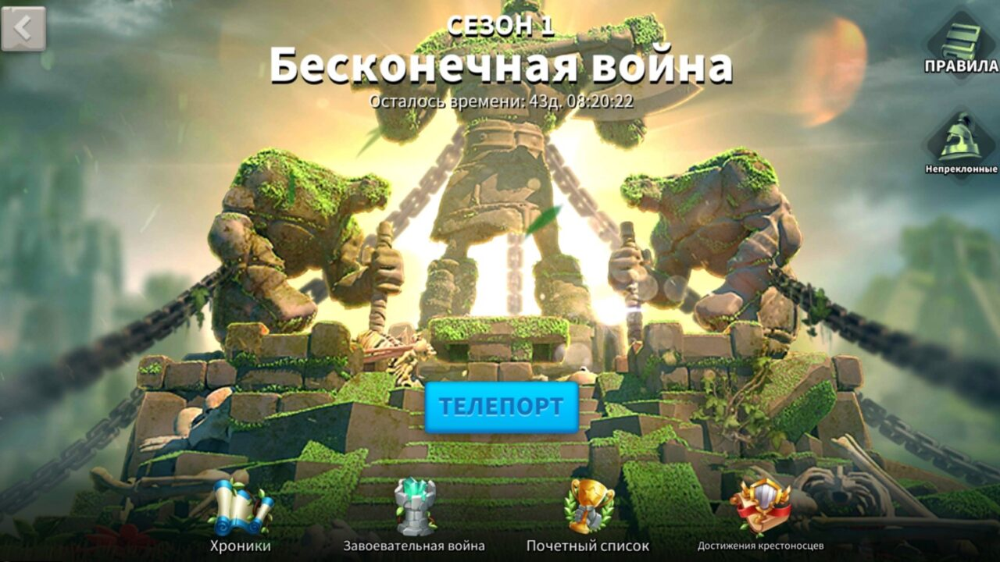
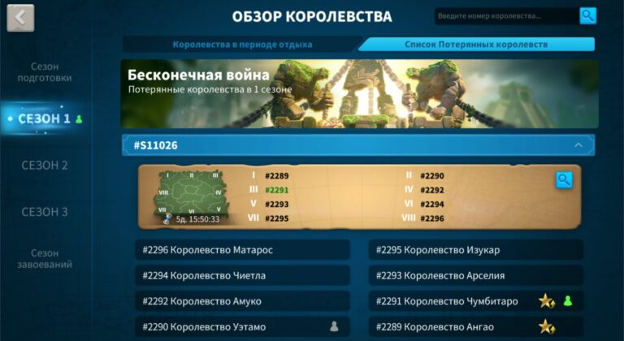
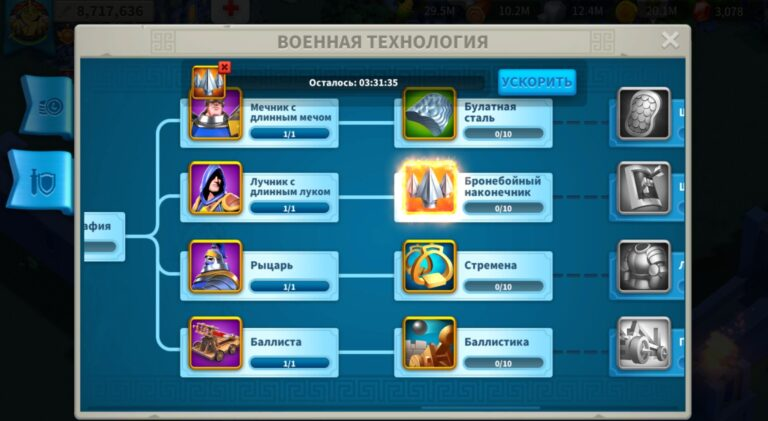

КВК – это сокращение от английского «kingdom vs. kingdom» (KVK), что в переводе на русский язык означает «королевство против королевства». После его начала появляется новая карта так называемого «Потерянного королевства», где между собой сражаются все королевства сервера.
Основная часть - это захват Великого зиккурата, находящегося в центре карты потерянного королевства. По пути, как и на основной карте, необходимо захватывать святые места, проходы и другие постройки.
Есть два вида войн королевств: первые три сезона и КВК сезона завоеваний. Они отличаются механикой и начинаются на разных этапах игры. Чтобы игроку дойти до сезона завоеваний, нужно играть как минимум год. Самая первая война королевств начинается на 80-90 день развития сервера, вторая на 180, третья на 250, а сезон завоеваний примерно через 360 дней. Чтобы хорошо выступить на КВК и получить большие награды, нужно правильно к нему подготовиться и хорошо себя показать в подготовительном этапе.
Подготовка к КВК по сути начинается сразу после создания аккаунта, так как все сервера сначала вступают в «Сезон подготовки». За это время в каждом королевстве сервера формируются сильные альянсы, появляются прокачанные игроки. Сезон подготовки заканчивается через некоторое время после захвата «Забытого храма». Сезон подготовки За 80-90 дней развития перед первой войной королевств необходимо набрать максимальную силу и хорошо подготовиться к будущим сражениям.
Ресурсы – одна из самых важных составляющих игры. Без них не получится тренировать войска, улучшать здания и оплачивать лечение солдат в госпитале. А именно это и пригодится на войне королевств, так как там будет много масштабных сражений с большими потерями. Лечение раненых Чтобы заработать больше очков на КВК нужно иметь хорошие запасы ресурсов, которые понадобятся для лечения войск. Также они нужны для тренировки любого из типов юнитов.
Без прокачанного города и технологий в академии не получится хорошо показать себя на КВК. В первую очередь нужно прокачать ратушу, чтобы открыть 5 маршей войск и увеличить их максимальную вместимость у командиров. Ратуша Второй момент – это военная ветка технологий в академии. Очень важно перед первой войной королевств открыть войска 4-го уровня, а в последующем и 5-го. Также нужно по максимуму прокачать атаку и защиту своему основному типу войск, так как это будет непосредственно влиять на исходы сражений.
Не старайтесь сразу открыть все типы юнитов 4-го уровня, так как это очень долго. Лучше изучите основной и после этого сделайте ему максимально возможное увеличение атаки и защиты. После этого можно докачивать остальные типы войск.
Назад